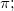

最終更新日:2015/02/04
関数を定義するのにOriginCを使用します。これは、関数の定義においてC言語のシンタックスに従う必要があるということです。C言語はそれぞれのケースに応じて変更されます。そのため、「パラメータの名前」ボックスに入力した文字は、 「関数」ボックスに入力したパラメータ名と完全に一致しないといけません。
例えば、パラメータ名がP1の場合、関数定義に p1 と使うことはできません。そのうえOriginCのほとんどの数学的関数は小文字を使用しています。ですのでSin()ファンクションは失敗します（sin()をかわりにつかってください）。しかし（pi、 Pi、 PI）は定義済みなのですべてになります。
ユーザ定義フィット関数をOriginCを使って作成しコンパイルするには以下のOriginヘルプファイルを参照してください。
キーワード: ユーザ定義, 数式, 関数式, Origin C